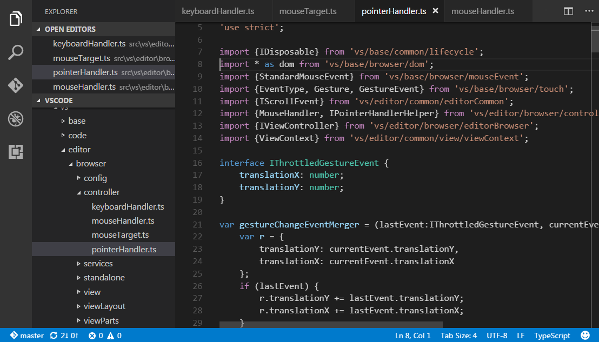

Visual Studio Code ではエディタ上のタイトル領域に、タブ(タブ付き見出し)で開いている項目を表示します。
ファイルを開いたとき、ファイルの新しいタブを追加します。

タブを使用することで項目の間をすばやく移動できますし、タブの順番をドラッグアンドドロップで並び変えることができます。
タイトルエリアに収まりきらない項目ある場合は Show Opened Editors コマンド(...ボタンからも利用可能)を利用して、タブのドロップダウンを表示してください。
また、タブ機能を使いたくない場合は workbench.editor.showTabs 設定 を false にして無効化することができます:
|
タブなしで作業したい場合、 VS Code の最適化方法をタブなしで作業で参照してください。
タブの順序
既定では、新しいタブを既存のタブの右側に追加しますが workbench.editor.openPositioning 設定で新しいタブを表示する場所を制御できます。
タブを左側に表示するようにしたくなったら次を設定します:
|
プレビューモード
新しいタブで開かず、既存のタブを利用するプレビューモードはエクスプローラーでファイルをシングルクリックまたは選択することでできます。これは複数のファイルを見たいとき、開いたファイルごとのタブを作りたくない場合に便利です。ファイルを変更したくなったら、ファイルをダブルクリックして開くことで新しいタブでそのファイルを開きます。
プレビューモードは、タブの見出しをイタリック体で表示します:

プレビューモードを使用せず、常に新しいタブを作成したい場合は次の設定で制御できます:
workbench.editor.enablePreview: 開いているエディタをプレビューとして表示するかどうかを制御workbench.editor.enablePreviewFromQuickOpen: Quick Open で開いたエディタをプレビューとして表示するかどうかを制御
エディタグループ
エディタを分割(Split Editor, Open to the Side)することで、エディタグループを配置する新しいレイアウトを作成できます。VS Code は左, 中央, 右 の3つのエディタグループまで作成できます。
エクスプローラー上部の開いているエディタで現在の配置を見ることができます:
これを利用することでワークベンチ上のエディタグループを、ドラッグアンドドロップしたり、グループ間移動でのタブ移動そしてグループをすばやく閉じることができます。(すべてのエディタを閉じる)
Note: VS Code はタブの有効に関係なく、エディタグループを使用します。タブがない場合は、エディタグループは開いている項目のスタックにすぎず、エディタペインで最後に選択した項目を表示します。
(編集メモ: 訳し方がわからなかった
横レイアウト
(UI翻訳より)
既定の設定で、エディタグループは縦3列にレイアウトします。必要に応じて 上, 中央, 下 のように横3行レイアウトに変更することが可能です。
次の方法で垂直と水平レイアウトを切り替えます:
- 表示 > *エディタ グループ レイアウトの切り替え
- View: Toggle Editor Group Vertical/ Layout コマンド (コマンドパレット内)
- 開いているエディタ のレイアウト切り替えボタン
- ⌥⌘1 (Windows, Linux Shift+Alt+1) キーボードショートカット
キーボードショートカット
エディタとエディタグループをすばやく移動するための便利なキーボードショートカットを次に示します。
既定のキーボードショートカットを変更する場合は キーバインド を参照してください。
- ⌥⌘→ (Windows, Linux Ctrl+PageDown) 次のエディタで開く
- ⌥⌘← (Windows, Linux Ctrl+PageUp) 以前のエディタを開く
- ⌃Tab (Windows, Linux Ctrl+Tab) グループ内の最近使用したエディタのうち次のエディタを開く
- ⌃⇧Tab (Windows, Linux Ctrl+Shift+Tab) グループ内の最近使用したエディタのうち前のエディタを開く
- ⌘1 (Windows, Linux Ctrl+1) 最初のエディタ グループにフォーカス
- ⌘2 (Windows, Linux Ctrl+2) 2 番目のエディタ グループにフォーカス
- ⌘3 (Windows, Linux Ctrl+3) 3 番目のエディタ グループにフォーカス
- ⌘K ⌘← (Windows, Linux Ctrl+K Ctrl+Left) 前のグループにフォーカス
- ⌘K ⌘→ (Windows, Linux Ctrl+K Ctrl+Right) 次のグループにフォーカス
- ⌘W (Windows Ctrl+F4, Linux Ctrl+W) エディタを閉じる
- ⌘K W (Windows, Linux Ctrl+K W) グループ内のすべてのエディタを閉じる
- ⌘K ⌘W (Windows, Linux Ctrl+K Ctrl+W) すべてのエディタを閉じる
Tab のファイルアイコン
ファイルアイコンのテーマを選択すれば、タブの見出しにファイルアイコンを表示することができます(ファイル > 基本設定 > ファイルアイコンのテーマ, Code > 基本設定 > ファイルアイコンのテーマ ) 。開いているエディタをアイコンで表示したくない場合は workbench.editor.showIcons 設定でアイコンを無効化できます。
タブなしで作業
VS Code 以前のリリースのようにタブを使用したくない場合は、次の設定を使用できます。
workbench.editor.showTabs を false にすることでタブ(タブ付き見出し)を完全に無効化できます。
プレビューモードの無効化
ファイルエクスプローラーの 開いているエディタ はファイル移動を、タブなしですばやく行う方法です。プレビューモードは、シングルクリックをしたとき開いているエディタやエディタグループにファイル追加しません。この機能を workbench.editor.enablePreview と workbench.editor.enablePreviewFromQuickOpen 設定で無効化できます。
Ctrl+Tab でエディタグループの一覧を表示するのではなく、最近開いた項目一覧にする
Ctrl+Tab のキーバインドを変更して、開いているエディタグループ一覧を、(現在のエディタグループとは関係ない)最近開いた項目を表示することができます。
キーバインド で次を追記します:
|
1つのエディタを閉じるのではなく、全体を閉じるようにする
既定の設定で kb(workbench.action.closeEditorsInGroup) は1つのエディタを閉じるように割り当てられています。これをぜんぶのエディタを閉じるようにしたくなったらキーバインドに次を設定することができます。
Mac:
|
Windows/Linux:
|